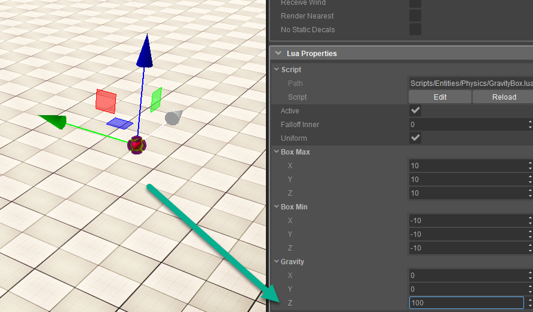
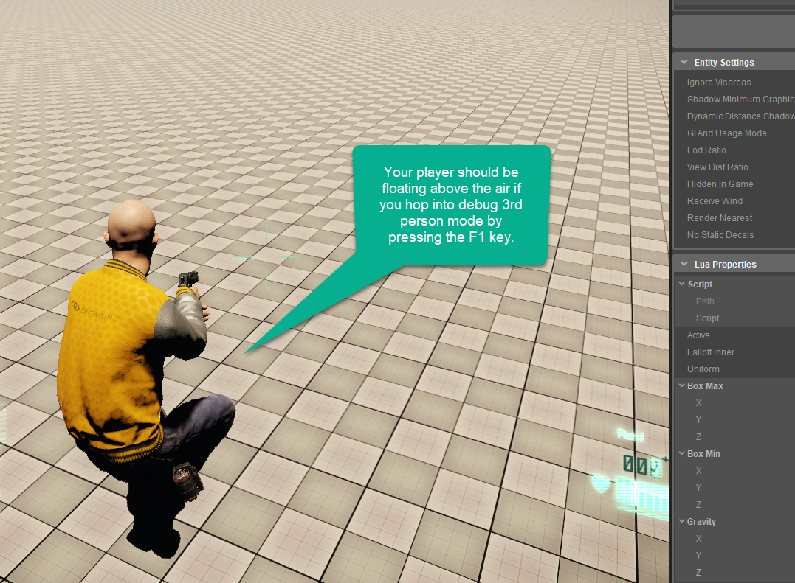

Еще один инструмент, предоставляемый в редакторе, — это гравитационная сфера, которая позволяет вам создавать сплайн, а затем направлять входящий в него объект по траектории. Его можно рассматривать почти как аэродинамическую трубу, его довольно легко настроить и настроить, и он имеет те же функции, что и инструменты «Дорога» или «Река», если вы использовали их ранее.
Включение и выключение гравитационных сфер
Выполните следующие шаги, указанные ниже, чтобы настроить гравитационную сферу на вашем уровне:
- Перейти к Создать объект -> Устаревшие объекты -> Физика и возьми Гравитационный ящик чтобы добавить его в область просмотра и сцену.
- Выбрав объект Gravity Box, прокрутите вниз его свойства, чтобы настроить гравитационное влияние. Поскольку мир по умолчанию установлен на -13 мы можем изменить влияние Гравитационного ящика на что-то вроде 100 чтобы увидеть эффекты плавания нашего игрока в пространстве.
- Наконец, мы попытаемся включать и выключать это, используя Flow Graph и запуская его с помощью переключателя внутри тома. Сначала нам нужно будет добавить 3 базовых объекта, а затем установить их массу 100 в объеме гравитационного ящика.
- Теперь, когда у нас есть объекты, расположенные, как показано ниже, мы постараемся добавить в сцену триггер, чтобы иметь возможность контролировать влияние блока при его включении.
Шаг 1

Шаг 2

Шаг 3
